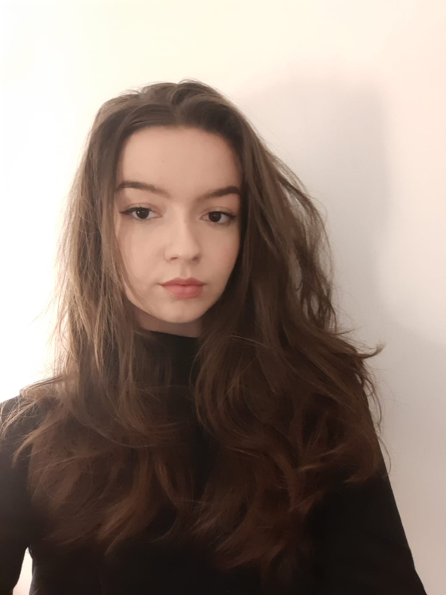

Pauline BELLET
Contact
☎ 06 95 43 40 22
✉ pauline@bellet.me
⌂ 23, rue des Bordeaux, 94220 Charenton-le-Pont
Tout juste diplômée d'un Mastère en Communication Digitale, je suis à la recherche d'un poste en tant que Content Manager.
Mes différentes expériences en communication m'ont permis de développer une appétance pour la création de contenu.
Pour tout renseignement supplémentaire, n'hésitez pas à me contacter.
Mes formations
- 2019-2022 : IICP, Mastère en Communication et stratégie digitale
- 2017-2019 : EIML, Bachelor Marketing du Luxe
Mes expériences professionnelles
- EMPWR, 2020-2022, Chargée de marketing digital
- Agence de Communication Fort et Clair, 2 mois, Assistante attachée de presse
- Lacoste, 1 mois et demi en 2018, Conseillère de vente
Mes compétences
- Rédaction d'articles
- Marketing automation
- Copywriting
- Élaboration de stratégies éditoriales
- Community management
- Anglais, Espagnol, Italien
Mes certifications
- Bachelor Marketing de Luxe délivré par l'EIML
- Mastère Communication et Stratégie Digitale délivré par l'IICP
- TOIEC : 935
Mes hobbies
- Musculation
- Cuisine
- Animal Crossing